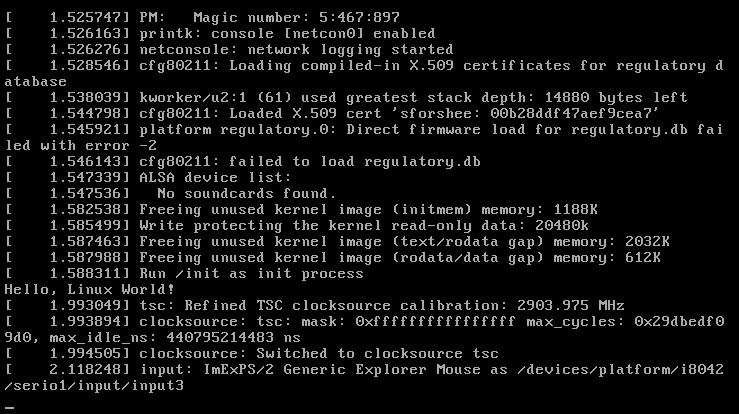

Funy Monkey — Last Updated: June 02 2021
Why would you want to make your own Linux Distro?
When needing to deploy multiple Systems it can sometimes be easier to just run the installer of your own Linux Distro and be done with it, instead of having to either do it Manually or use a Script. It can also be very fun!
And it can help you learn the inner workings of a Linux Distro.
i gotta add more shit here!
NOT RECOMMENDED!
Depending on how minimal you want your Distro to be, it is Very reccommended that you follow the Linux from Scratch Book
The Linux from Scratch Book is already Very, Very Minimal, so we will be going through the ABSOLUTE MINIMUM for a working Linux System
Create a Folder for the Workspace and make all needed Folders
It can be very helpful to use a tool like git to easily revert changes
Download and Extract the Linux Kernel (There probably will be newer kernels than the one on the link shown here. If you want a newer Linux Kernel go to The linux kernel Website and download it from there.)
Now we need to Compile and Configure the Kernel, depending on what this must run on this can be either very Simple or Complex and Time Consuming.
For documentation on comfiguring the Linux Kernel, check out This Segment of the Linux From Scratch Book and the Gentoo wiki Page on Configuring the Kernel
Replace “x86” with another Architecture if you are not compiling the x86 Linux Kernel
The first File we need is the init which will initialize the System, it needs to be an Executable program.
When booted, it should print out “Hello, Linux World!” as shown here.

Now we have a working Linux System, albeit very useless. So lets add a shell, in this case we will use Bash.
To dynamically compile Bash, the Linux System will need all of Bash’s Dependencies, which are
And you will of course need the Dependencies of those Programs as well.
You could also follow the Linux from Scratch Book Compilation Segment up until Bash.
Now, to Download and Compile Bash:
Remember that there might be a newer Version of Bash on the Bash Website
Replace “x86_64” with another Architecture if you are not compiling for x86_64
Bash will now reside in /usr/bin/bash, but it should be moved to /bin/bash
Static Compilation does not need any of Bash’s dependencies to be in the System, instead it is just one Singular File.
musl is needed for true Static linking
Either install it with a Package Manager of choice or build it from Source.
Set “musl-gcc” as the C Compiler and set CFLAGS.
Now, to Download and Compile Bash:
Remember that there might be a newer Version of Bash on the Bash Website
Replace “x86_64” with another Architecture if you are not compiling for x86_64
Bash will now reside in /usr/bin/bash, but it should be moved to /bin/bash
This document was translated from LATEX by HEVEA.